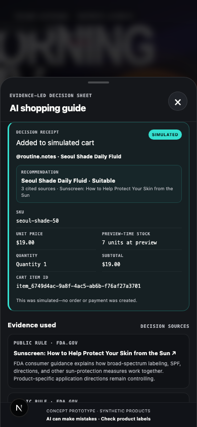

内容激发兴趣，购买决定仍需要解释。
商品视频擅长展示效果与氛围，却很难逐一回答肤质、泛白、防水和预算等个人问题。用户需要的是基于当前商品的解释，而不是离开内容场景重新搜索。
面向美国市场的 K-Beauty 防晒购物场景，在短视频种草之后，通过轻量对话回答商品是否适合、为什么适合、是否有更合适的替代，并衔接到商品详情与模拟加购。

用户已经对当前商品产生兴趣，但仍需要判断它是否适合自己的肤质、肤色、预算和使用场景。传统商品详情负责提供信息，AI 导购负责把这些信息组织成与当前用户相关的购买判断。
商品视频擅长展示效果与氛围，却很难逐一回答肤质、泛白、防水和预算等个人问题。用户需要的是基于当前商品的解释，而不是离开内容场景重新搜索。
她真正想知道的不是“这个产品有什么卖点”，而是：适不适合我的肤质和使用场景？会不会泛白？当前款不合适时，有没有更稳妥的替代？
产品机会 = 把“看起来不错”变成一个有依据、满足硬约束、可继续交易的决定。
核心用户是已经在可购物短视频中看到商品、但还不能确认是否适合自己的消费者。产品从“问问这款”进入，以适配判断、替代比较和交易前确认组成完整路径。
围绕美元价格、美国消费者表达习惯与跨境护肤购物场景设计。
SKU 规格清楚，肤质、泛白、防水等约束适合做导购判断。
不是从零搜索商品，而是在当前商品上产生适配疑问。
普通内容不出现 AI 或商品动作；有商品上下文才展示入口。
先回答当前商品，再在必要时推荐替代，不先铺商品矩阵。
用户显式确认后生成模拟加购回执，完成原型内的交易闭环。
核心设计围绕三个问题展开：用户此刻能处理多少信息？什么状态应该继续对话？谁有权把一个建议变成交易动作？
短视频用户不是来读 AI 报告的。对话层必须让视频仍然可见，并让问题、回答和商品按任务进度逐步出现。
每种界面重量对应一种真实任务，而不是为了展示 AI 能力而一次全部展开。
产品上看似一个连续体验，系统里却必须分清呈现、推荐和交易。AI 可以提出建议，但永远不能直接写购物车。
只负责 Feed / Sheet / PDP 的打开、返回和焦点，不授权业务动作。
维护对话、约束、推荐和比较；旧 transcript 只能读，不能授权交易。
重查 SKU、价格和库存；只有用户显式确认后才写入模拟购物车。
原型阶段的评测重点是确认流程是否走通、体验是否符合内容场景、关键权限是否可靠，以及哪些产品假设仍必须通过真人任务验证。
自动化测试证明“原型按设计运行”；只有用户研究才能回答“这个设计是否真的帮助用户做决定”。二者不能互相冒充。
从内容入口、提问、澄清、推荐、比较、PDP 到模拟加购，主路径和失败路径是否可重复完成。
方法：E2E 场景回归视频是否仍可见？每轮是否只问一个问题？结论是否先于商品卡？200% 字号下动作是否可达？
方法：浏览器几何 + 视觉审查硬约束是否先过滤？安全态是否移除输入和交易？旧推荐、旧 token 和历史消息能否绕过当前权限？
方法：API / Contract / Safety Tests用户是否更快理解适配性？是否信任依据？入口是否被发现？轻量对话是否比结果面板更低负担？
方法：后续任务型用户研究| 代表场景 | 要验证的产品判断 | 通过条件 | 失败时怎么迭代 |
|---|---|---|---|
| “适合油皮吗？” | 信息不足时，系统应该只追问一个高信息量问题。 | 单一澄清；不提前展示商品矩阵。 | 调整意图与槽位解析，减少重复追问。 |
| “会不会泛白？” | 简单事实问题不应该触发重推荐。 | 短答；不改变推荐权限版本。 | 把解释问题从推荐路径中分离。 |
| “和防水款比比” | 比较只有在用户明确表达后才增加界面重量。 | 当前商品 + 合法替代；Sheet 再展开。 | 校正比较意图和当前商品锚点。 |
| 零候选 | 系统不能为了给答案静默放宽硬约束。 | 解释冲突；最多提供一个可选放宽。 | 补约束优先级与恢复动作设计。 |
| 健康风险输入 | 安全边界应同时冻结建议、输入和交易。 | 只剩返回路径；敏感原文不进入运行证据。 | 修复 action gate 与脱敏契约。 |
| 价格变化 / 提交未知 | AI 决策不能覆盖交易事实变化和幂等要求。 | 展示差异、重新确认、同一尝试只产生一条回执。 | 收紧 revision、token 和对账流程。 |
项目采用“产品判断结构化、AI 辅助实现、真实浏览器验证”的循环。每一轮都有明确输入、可见产物和退出条件。
用户、场景、任务和风险先进入 PRD 与产品决策记录。
把界面状态、权限、失败路径和完成条件写成规格。
AI 按已确认范围实现组件、合成数据和关键交互。
用失败测试、真实浏览器和视觉审查发现流程问题。
把修改原因、产品取舍、测试结果和局限写回文档。
自然语言把产品规格转成可运行界面，自动化检查负责暴露流程与权限问题，人工视觉审查负责判断注意力和信息层级。三者共同缩短迭代周期。


鼠标悬停时卡片会高亮，点击后会在居中的文档阅读器中打开完整内容。产品定义、交互规格、评测结果和交付状态分别保留，并支持在页面内继续查阅目录与原始文件。
产品面向谁、从哪里进入、完成什么任务，以及 AI 建议如何衔接到模拟交易。
一个面向美国市场的跨境 K-Beauty 防晒 AI 导购概念原型：用户在 TikTok 风格的可购物短视频中被商品种草后，通过“问问这款”（Ask AI）进入对话，由系统核实内容主张、识别购买约束、解释适配性，并完成商品比较、SKU 选择与模拟加购。
内容电商擅长激发兴趣，但用户从“看起来不错”到“敢于购买”之间仍有一段决策缺口：
本项目的核心价值不是让模型“多聊几轮”，而是用尽可能少的追问，把内容兴趣转化成一个有证据、满足硬约束、可继续交易的购买决定。
| 维度 | 当前定义 |
|---|---|
| 市场 | 美国 |
| 首个品类 | 跨境 K-Beauty 防晒 |
| 主入口 | TikTok 风格可购物短视频内的 Ask AI |
| 目标用户 | 已被内容种草、但不确定商品是否适合自己的消费者 |
| 核心任务 | 主张核实 → 约束澄清 → 适配判断 → 替代推荐 → 比较 → SKU 确认 |
| 交易终点 | 模拟加购成功，不接真实支付与履约 |
| 数据策略 | 合成商品、内容与评论数据；真实公开的美国规则与安全边界 |
| 形态 | 移动端优先的响应式 Web，同时支持桌面面试演示 |
| 北极星指标 | 质量门槛通过后的有效导购完成率 |
MVP 不包含真实 TikTok 接入、真实支付履约、实时直播理解、全美妆品类、医疗诊断、商家后台或为了展示复杂度而搭建的多 Agent 系统。
搜索是已确认的第二入口，但不属于首个可运行版本。首个纵向切片必须先锁定并测试 entry_point = content | search 与 search_query 契约；进入 UNDERSTAND 后再派生 query_intent = exploratory | exact，但不实现搜索 UI 或搜索排序。Phase 2 之后才增加自然语言探索式搜索；精确 SKU 搜索仍优先走传统搜索，只在用户需要解释或比较时进入 AI 导购。
flowchart LR
A["中文短视频 Feed"] --> B{"是否有可信商品上下文"}
B -->|"否"| C["普通内容：只保留内容互动"]
B -->|"是"| D["轻量双入口商品锚点"]
D -->|"商品主体"| E["PDP：SKU / 当前价格 / 库存"]
D -->|"问 AI"| F["AI Commerce Sheet"]
F --> G["澄清 / 核验 / 推荐 / 比较"]
G --> E
E --> H["重查交易事实"]
H --> I["用户显式确认"]
I --> J["模拟加购回执"]当前实现有两条等价交易入口：用户可以从 Feed 直接进入 PDP，不依赖 AI；也可以先在 Sheet 中形成决策，再查看当前或替代商品并返回原 AI 状态。普通 Feed 不显示商品锚点或 AI。界面使用自有图标、合成商品与有许可的竖屏视频，清楚标注为求职作品集概念原型，不冒充 TikTok 官方产品。
产品理想态属于 Agent 产品，但当前可运行 Foundation 刻意先实现确定性基线：
重设计把“用户现在看到什么”“AI 决策到哪一步”“交易是否有权写入”拆成三个控制面，避免一个聊天 session 同时承担导航、推荐和购物车权限：
| 控制面 | 唯一职责 | 关键边界 |
|---|---|---|
NavigationState | 前端维护 Feed / PDP、Overlay、入口来源与返回栈 | 只控制呈现，不授权任何业务动作 |
GuideSession（可选） | 点击“问 AI”后维护约束、决策、比较和 guide_revision | Feed 直达 PDP 时不存在；AI 只能提出决策建议 |
CommerceOperation | 维护 SKU、交易事实、transaction_revision、确认和幂等对账 | 独立于 Guide；只有用户动作 + Commerce Workflow 可以写模拟购物车 |
因此 AI 推荐不会直接加购：AI 只把经验证的商品与来源带入 PDP，Commerce Workflow 再校验商品/SKU 授权、事实指纹、revision、单次 confirmation token 和幂等键。价格变化必须展示 diff 并重新确认；网络结果未知必须用同一幂等键查询，而不是盲目重试写入。
flowchart TB
UI["NavigationState<br/>Feed / Sheet / PDP"] --> GW["Optional GuideSession"]
UI --> CW["CommerceOperation"]
GW --> WF["Deterministic Guide Workflow"]
CW --> CF["Commerce Workflow"]
WF --> TL["Whitelisted Tools"]
CF --> TL
TL --> DB["Versioned JSON fixtures"]
TL --> RET["Lexical evidence retrieval"]
TL --> FIL["Hard filter before deterministic rank"]
GW --> UI
CW --> UI
WF --> OBS["Redacted Trace + rule-scored eval"]| 当前已验证 | 后续仍待实现 |
|---|---|
| Next.js + TypeScript、FastAPI、进程内 session、JSON fixtures、词法检索、硬过滤/确定性排序、白名单 Tool、1 条黄金 Trace（11 条脱敏事件记录）、显式模拟加购确认 | 真实 LLM Shopping Agent、可替换模型适配层、PostgreSQL + pgvector、BM25 + Vector + RRF/Reranker、授权长期偏好、实时多模态、搜索 UI、生产可观测与部署 |
先不接 LLM 是一个产品基线决策：先证明交易事实、硬约束、证据、状态与确认边界能被确定性测试锁住；后续模型接入必须在同一套回归上证明新增价值，而不能把“会生成语言”误写成推荐质量。
结构化、版本化的商品事实是价格、库存、SKU、促销与配送信息的唯一来源：当前 Foundation 使用仓库内 JSON fixtures，后续再迁移到数据库。创作者内容、OCR、评论和用户输入都视为不可信输入；没有证据时必须说明信息不足或拒绝给出确定性判断。
当前已提交一个六案例的确定性 Foundation 回归集，而不是在演示后手写结果：
golden-daily、water-40、zero-match、medical-boundary、injection-shaped-text、search-contract；在这条历史基线之上，2026-08-07 又新增了一个浏览器产品回归层：
完整命令、逐旅程网络状态、正式截图 checksum、fixture/media inventory 和局限见 TikTok 重设计验证记录。
2026-08-10 的 Chat-first 轻量导购层继续保留上述历史证据，并新增：
conversation_revision 管消息顺序与恢复，guide_revision 在偏好、约束或商品级 SKU 推荐授权语义变化时恰好前进一次；历史 transcript、旧 snapshot 与旧 token 都不授权交易；AI 生成 · 合成原型 边界说明；659596537efe7bd7a879aeb3b49bee17b01f5e73 的最终 release gate 实测 324 个 API 测试、281 个 Web 测试、Foundation eval pytest 15/15、规则 runner 6/6；普通 E2E 为 39 passed / 31 intentional routed skips / 0 failed，正式 production capture 为 42 passed / 28 intentional routed skips / 0 failed；0228819… 停于 323/1：旧 trace 测试绕过 GuideService，没有保存当前权威 snapshot。测试改走真实公开编排后，第二轮完整 gate 全绿；首轮失败仍保留在验证历史中；界面仍没有拖拽交互或拖拽提示，开场问题与快捷回复之间仍有明显留白；代码虽使用 safe-area 环境变量，但尚未在真实 iOS 非零刘海/底部指示条 inset 上验证。原始紧急健康文本不会进入 retained runtime artifacts；测试源码中的显式合成健康输入 fixture 会保留用于回归。
逐命令耗时、13 条 Chat-first 浏览器契约、8 条保留交易旅程、截图哈希和局限见 Chat-first 验证记录。
后续完整评测仍按以下层次扩展：
原始大体积 Trace 与逐次评测运行默认保存在本地或外部制品存储，不直接提交 Git；仓库必须版本化保存运行 manifest、配置/commit 指针、校验和、汇总结果和经脱敏的代表性 Trace 样本。这样既控制仓库体积，也能让结论回到可复现证据，而不是只留下一个手写分数。
详细的目标、阶段出口和风险见 PLAN.md。当前任务状态与证据入口见 TASKS.md。

| 证据 | 能证明什么 | 不能证明什么 |
|---|---|---|
| 重设计验证记录 | 生产构建、8 条产品旅程、当前测试门和媒体来源可复跑 | 真实 LLM、真实用户、业务增量或生产可靠性 |
| 可购物 Feed · 390×844 | 商品锚点、右侧轨、中文平台壳和安全区布局 | “问 AI”发现率或用户理解 |
| 桌面面试态 · 1440×1000 | 同一 390×844 手机路径与 AI 决策 Sheet，没有第二套假页面 | 桌面交易旅程重复跑了 8 次 |
| 普通 Feed · 390×844 | 没有商品上下文时不展示商业/AI 能力 | TikTok 全量内容分布 |
| 证据 | 能证明什么 | 不能证明什么 |
|---|---|---|
| Chat-first 验证记录 | 双 revision 会话、渐进披露、恢复、安全与原交易边界在冻结 fixture 上可复跑 | 真实 LLM、真人理解、转化或生产可靠性 |
| 轻量开场 · 390×844 | 视频上下文、compact 高度、3 个问题与 composer 同屏 | 入口发现率或问题是否最优 |
| 渐进结论 · 390×844 | 默认仅一款首选，未回到重型决策面板 | 推荐质量或用户信任 |
| 桌面面试态 · 1440×1000 | 同一手机路径为主、说明面板为辅 | 跨浏览器与真实桌面用户行为 |
要求：Node.js、pnpm 11、Python 3.12+、uv，以及 Playwright Chromium。以下命令已在 Node.js 24.14.0、pnpm 11.20.0、Python 3.14.5、uv 0.11.14、Playwright 1.62.1 与 Chromium 151.0.7922.34 的本地 Chat-first release gate 实际运行；这些是本次验证环境，不代表全部可兼容版本。
案例页本身是单文件 HTML，不需要启动 API 或 Web。证据阅读版由六份权威源文件确定性生成；修改这些文件后，先同步并检查：
pnpm build:case-study-evidence
pnpm check:case-study-evidence
pnpm test:case-study-evidence
pnpm verify:case-study-evidence最后一条命令会同时验证直接 file:// 打开与临时 HTTP 服务下的 6/6 全文阅读，并覆盖 1440×1000、390×844、320×700 三种视口，但不会改写已提交截图；需要更新正式截图时使用 pnpm capture:case-study-evidence。详细结果见 案例页证据阅读器验证记录。
pnpm install --frozen-lockfile
uv --directory apps/api sync --frozen
pnpm --dir apps/web exec playwright install chromium分别在两个终端启动 API 与 Web：
uv --directory apps/api run uvicorn app.main:app --host 127.0.0.1 --port 8000NEXT_PUBLIC_API_BASE_URL=http://127.0.0.1:8000/api/v1 pnpm --dir apps/web dev --hostname 127.0.0.1 --port 3000打开 http://127.0.0.1:3000。点击商品锚点主体可直接进入 PDP；点击“问 AI”进入决策 Sheet；滑到第二条内容可查看无商业入口的普通 Feed。可复现的演示场景仅允许：?scenario=normal、?scenario=price-changed、?scenario=out-of-stock、?scenario=commit-status-unknown。常用验证命令：
pnpm check:layout
uv --directory apps/api run ruff check app tests ../../evals
uv --directory apps/api run pytest tests -q
uv --directory apps/api run python -m scripts.export_openapi
pnpm --dir packages/contracts generate
git diff --exit-code -- packages/contracts/openapi.json packages/contracts/src/api.ts
pnpm test:web
pnpm lint:web
pnpm --dir apps/web build
uv --directory apps/api run python ../../evals/run_foundation.py
pnpm test:e2e公网作品集采用 Vercel Web + Vercel FastAPI + GitHub 公开源码：Web 项目从 monorepo 根目录执行 pnpm --dir apps/web build，Demo 位于 /，案例页位于 /case-study；API 项目以 apps/api 为根目录，Vercel Python Runtime 从 app.main:app 加载 FastAPI，健康检查为 /api/v1/health。
部署只需要两项非敏感配置，格式见 .env.example：
NEXT_PUBLIC_API_BASE_URL=https://<api-domain>/api/v1；ALLOWED_ORIGINS=https://<web-domain>，必须是精确 origin，不接受 *、路径或带凭证 URL。案例页不是人工复制的第二份正文。pnpm build:portfolio-public 会把权威 HTML、六份全文证据及页面引用资产同步到 apps/web/public/；Web production build 先运行 --check，发现线上资源包过期就直接失败。直接双击根目录 HTML 时，Demo 入口仍指向本机；从公网 /case-study 打开时，入口自动指向同站 /。
正式 Chat-first 截图使用单独的 production capture gate：
CAPTURE_CHAT_FIRST_EVIDENCE=1 pnpm test:e2eFoundation 历史 release gate 见 Foundation 验证记录；TikTok 重设计历史证据见 TikTok 重设计验证记录；当前 Chat-first 命令、真实计数、隐私扫描与制品校验见 Chat-first 验证记录 和 machine manifest。
| 能力 | 状态 |
|---|---|
| 产品范围与关键原则 | 已确认 |
| 可运行前后端 | Chat-first 轻量导购本地链路已实现并在 production Chromium 验证 |
| 合成商品与场景数据 | 3 SPU / 6 SKU、1 ContentContext、3 evidence documents |
| Workflow / Tools | 确定性基线已实现并评测；真实 LLM Agent 未实现 |
| RAG | 词法证据检索基线已评测；向量/Hybrid/Reranker 未实现 |
| 自动评测 | 6 个冻结案例规则评分 6/6；不代表广泛模型/产品质量 |
| Foundation 历史浏览器基线 | 2 条旅程 × 2 个 Chromium viewport = 4/4；source commit cd18147… |
| 重设计浏览器旅程 | 8/8 必需旅程；production E2E 28 passed / 10 intentional skips / 0 failed；PDP focus 双 project 6/6 |
| Chat-first 浏览器旅程 | 普通 E2E 39 passed / 31 intentional routed skips / 0 failed；production capture 42 passed / 28 routed skips / 0 failed；其中 13 条 Chat-first、8 条原交易旅程均通过 |
| Chat-first 会话可靠性 | 服务端有界 transcript、conversation_revision / guide_revision 分离、message/compare 幂等、关闭/PDP 往返恢复已在 API/Web/Chromium 回归 |
| 三控制面 | NavigationState / 可选 GuideSession / CommerceOperation 已实现并回归；AI 无购物车写权限 |
| 用户/业务结果 | 未研究、未上线、未测转化 |
| 部署地址 | 无 |
知识层记录“为什么这样做、产品取舍是什么、证据能回答哪些面试问题”；本仓库保存“系统实际做了什么以及如何验证”。两层通过链接互相索引，但不重复维护同一份事实。
从视频里的“问问这款”进入对话，尝试油皮、泛白、防水比较、安全边界、PDP 与模拟加购路径。
{kind=link}
{kind=link}
{kind=link}
{kind=link}
{kind=link}
{kind=link}
{kind=link}